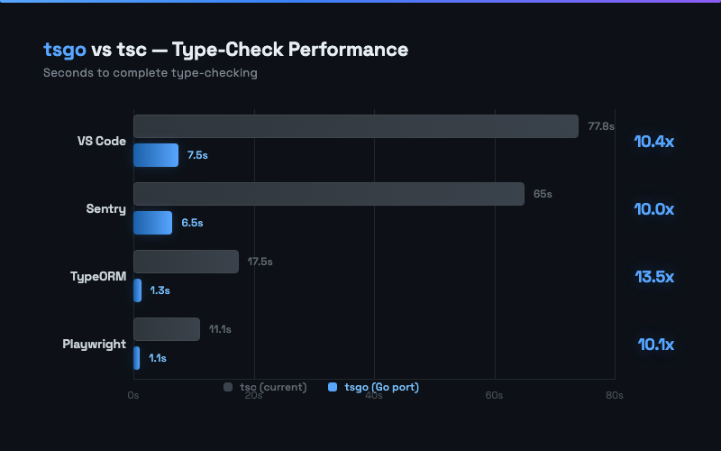
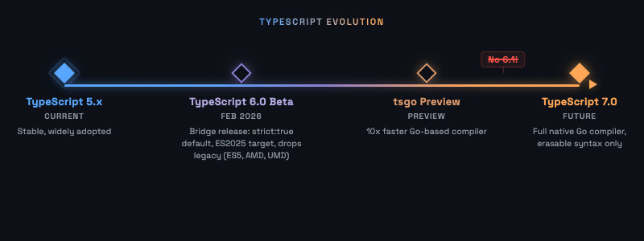
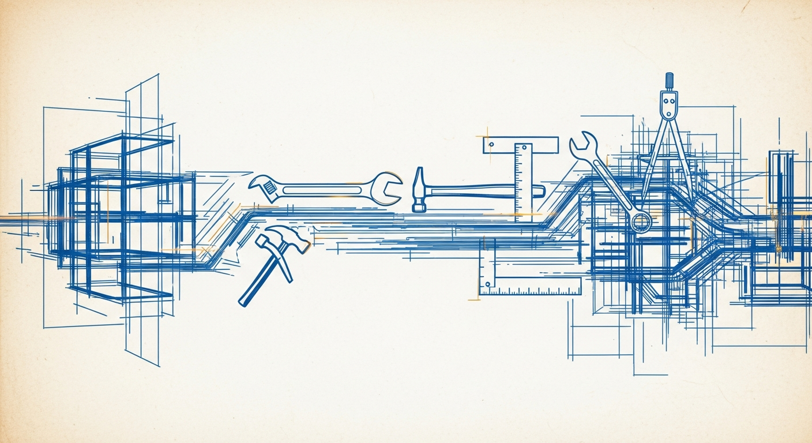

Microsoft released TypeScript 6.0 Beta, the bridge release before TypeScript 7.0 — the full native Go port (tsgo) of the compiler. The Go rewrite delivers ~10x faster type-checking across real-world projects, with VS Code compilation dropping from 77.8s to 7.5s.
erasableSyntaxOnly flag previews TS 7.0 requirementsstrict: true as default, ES2025 target, drops legacy (ES5, AMD, UMD)--stableTypeOrdering flag previews TS 7.0 at 25% perf cost
The Oxc project released Oxfmt Beta, claiming 100% Prettier compatibility with ~30x speed improvement. Oxlint also received updates with JavaScript plugin editor support and Tailwind CSS class sorting integration. Our CAAC team has already adopted Oxfmt.
.prettierrc sprawl. The real flex? Our CAAC team already migrated, and the pre-commit hook went from “time to make coffee” to “wait, it’s done already?”
Flat config only — legacy .eslintrc fully removed. Node.js 20+ required. JSX elements treated as variable references (no more no-unused-vars false positives). File-based config discovery improves monorepo DX. Type definitions moved into core.
eslint.config.* per package
05Rolldown introduced lazy barrel optimization that dramatically reduces module loading for libraries with barrel files. No code changes required — it’s a bundler-level optimization.
Render prop customization addresses the most-voted GitHub issue (#5476). Enables integration with routing libraries (Next.js Link) and animation libraries (Framer Motion).
useRender hook patternJohnson Chu (creator of Volar) published a deep dive into alien_signals, achieving ~400% of Vue 3.4 reactivity. Vue 3.6 adopted its algorithm, reducing memory 14%.
A Vite-based drop-in replacement for 94% of the Next.js API — built by one engineer, one week, $1,100 in AI tokens. The “test suites as specifications” pattern is a paradigm shift.
Cursor extended AI coding agents beyond code editing into full computer interaction (browser, terminal). Agents operate autonomously in cloud sandboxes.
A new web platform API providing interceptable close requests for dialogs. Unlike close(), it fires a cancel event that can be prevented.
closedBy attribute: "closerequest" | "any" | "none"A static analysis tool that diagnoses React performance issues across 60+ rules and 8 categories. Ships with a Claude Code Skill, making it the first “AI-native” React perf tool.
Microsoft released @playwright/cli, a standalone CLI designed for AI coding agents. Keeps browser state on disk instead of the LLM’s context window.
Excalidraw launched an official MCP server with 26+ tools for AI-driven diagram creation. Features a real-time feedback loop: AI creates, takes a screenshot, analyzes the result, and iteratively refines.
An open-source knowledge base of 40+ React/Next.js performance rules across 8 categories, packaged as an AI Agent Skill. 21K+ GitHub stars and 150K+ weekly installs.
use client on wrappers pulls ALL children into client bundlenpx skills add vercel-labs/agent-skillsProgrammatic text highlighting via CSS without DOM modification. Now fully cross-browser supported (Chrome 105+, Firefox 140+, Safari 17.2+).
<mark>-based DOM highlighting::highlight() CSS pseudo-element for styling<mark> tags because “good enough” beats “perfect.”
Geist Pixel Font — Vercel’s pixel-art addition to the Geist type family. Design systems evolving beyond utility into personality. Learn more →
Chrome WebMCP — Chrome 146+ ships WebMCP, allowing websites to become MCP servers directly, reducing overhead ~67%. Early preview →
Figma MCP — Official MCP server for Figma, joining Excalidraw in the design-to-code AI pipeline. Enables AI agents to read and write Figma designs programmatically.
Base UI & useRender — MUI’s unstyled component library adopts the same render-prop pattern as React Aria, signaling industry convergence on headless UI patterns.

The frontend toolchain is undergoing its most dramatic transformation since the rise of webpack. Three forces are converging to reshape how we write, check, and ship JavaScript — and our team is experiencing all three simultaneously.
Microsoft rewrote the TypeScript compiler in Go, achieving 10x faster type-checking on real-world projects. TypeScript 6.0 Beta — the bridge release — introduces erasableSyntaxOnly as a preview of what TS 7.0 will require: no enums, no parameter properties, no runtime-generating syntax.
The MAAC team has already prepared (PR #7579), converting all enums to as const and fixing baseUrl patterns across 41 files. The reward: cold-start type checking dropped from ~99 seconds to ~1.6 seconds with incremental builds — a 62x improvement.
Oxfmt Beta delivers 100% Prettier compatibility at 30x the speed. Our CAAC team was an early adopter — replacing Prettier with Oxfmt cut pre-commit hook time from 6.3 seconds to 0.7 seconds. Combined with Oxlint’s growing ESLint rule compatibility and Rolldown’s barrel file optimization (92% module reduction for Ant Design), the Rust-based toolchain is no longer experimental — it’s production-ready.
TypeScript tsgo: VS Code compile 77.8s → 7.5s (10.4x) · TypeORM 13.5x · Editor load 9.6s → 1.2s (8x) · Memory 2.9x more efficient
Oxfmt: 30x faster than Prettier · 2–3x faster than Biome · 100% conformance
Rolldown: Ant Design 2,986 → 250 modules (92% reduction) · Windows 210ms → 50ms (4.2x)
The most transformative shift may be the least visible. Claude Code has evolved from a coding assistant into a platform: our team uses it to analyze Asana tickets and Slack threads, reply directly on both platforms, and solve cross-domain problems.
During Chinese New Year oncall, a frontend engineer used Claude Code to diagnose and fix two backend webhook bugs in a codebase they’d never touched — resolving issues that had been escalated for days. Issue 1: ~4–5hr. Issue 2: ~2–2.5hr. Both involved reauth webhook subscription bugs in the backend repo.
The skill-d2i project demonstrates Claude Code managing Diablo II: Resurrected gear — proving the tool’s versatility extends far beyond code. When your AI assistant can plan game strategies, the line between “developer tool” and “general-purpose agent” blurs.
as constThese three forces share a common thread: they’re all about removing friction. Faster compilers mean shorter feedback loops. Faster formatters mean pre-commit hooks that don’t break flow. AI-native tools mean domain boundaries stop being blockers. The frontend developer of 2026 doesn’t just write React — they orchestrate a toolkit that’s faster, smarter, and more versatile than ever before.
useContext(Context) with React 19’s use(Context) API across the codebase.erasableSyntaxOnly, converted enums to as const, replaced baseUrl with paths. Cold start ~99s → warm start ~1.6s (62x faster).Migrating from Ant Design Form to a different form library that better supports UI/state separation and flexible styling.
any types throughout — too loose, making it easy to introduce bugs TypeScript can’t catchany-heavy API.Replacing Zustand with nanostores for global state management. Lighter footprint with fewer foot-guns, aligning with the team’s preference for lightweight, focused libraries.
Inheriting the ESLint config upgrade (v9 → v10 path) and gradually re-enabling disabled rules across the codebase.
any-typed forms), land that win, then ride the momentum.
npm install them.enum in TypeScript… well, as const sends its regards.”
Frontend Technology Digest · Issue 26-02 · January – February 2026
Crescendo Lab Engineering · Taipei, Taiwan